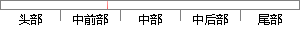

（2）Sigmoid函数不是0均值的，这是我们不希望出现的状态，因为这会导致后面的神经元的输入是非0均值的信号，会对梯度产生影响：假设后层神经元的输入都为正数，那么对权重求局部梯度就都为正数，这样在反向传播的过程中权重要么都往正方向更新，要么都往负方向更新，导致存在这样一种类似的捆绑效果，使得收敛很慢。
片段位置图

相似结果|
1
原句片段：（2）Sigmoid函数不是0均值的，这是我们不希望出现的状态，因为这会导致后面的神经元的输入是非
相似片段 1：Sigmoid.?Sigmoid(也叫逻辑激活函数) 非线性激活函数的形式是σ(x)=1/(1+...不是0均值的,这是我们不希望的,因为这会导致后层的神经元的输入是非0均值的...
相似片段 2：第二, 对于深层网络, sigmoid 函数反向传播时, 很容易就会出现梯度消失的情况 ...Sigmoid 的输出不是 0 均值的,这是我们不 希望的,因为这会导致后层的神经元...
相似片段 3：之前我们说过,sigmoid函数输入一个实值的数,然后将其压缩到0~1的范围内。特别...Sigmoid 的输出不是0均值的,这是我们不希望的,因为这会导致后层的神经元的...
相似片段 4：所有神经元的激活值,因为这会导致后层的神经元的...之前我们说过,sigmoid函数输入一个实值的数,然后将...Sigmoid 的输出不是0均值的,这是我们不希望的,因为...
相似片段 5：之前我们说过,sigmoid函数输入一个实值的数,然后将其压缩到0~1的范围内。特别...Sigmoid 的输出不是0均值的,这是我们不希望的,因为这会导致后层的神经元的输入...
相似片段 6：之前我们说过,sigmoid函数输入一个实值的数,然后将其压缩到0~1的范围内。特别...Sigmoid 的输出不是0均值的,这是我们不希望的,因为这会导致后层的神经元的输入...
相似片段 7：??(2)Sigmoid 的输出不是0均值的,这是我们不希望的,因为这会导致后层的神经元的输入是非0均值的信号,这会对梯度产生影响:假设后层神经元的输入都为正(e...
相似片段 8：我们在后面会介绍更多的激活函数。 神经元的上述前...第二,对于深层网络,sigmoid函数反向传播时,很容易...不是0 均值的,这是我们不 希望的,因为这会导致后...
2
原句片段：0均值的信号，会对梯度产生影响：假设后层神经元的输入都为正数，那么对权重求局部梯度就
相似片段 1：元的输入是非0均值的信号,这会对梯度产生影响:假设后层神经元的输入都为正(e...),那么对w求局部梯度则都为正,这样在反向传播的过程中w要么都往正方向更新,...
相似片段 2：神经元的输入是非0均值的信号,这会对梯度产生影响:假设后层神经元的输入都为正(e.g. x>0 elementwise in f=wTx+b),那么对w求局部梯度则都为正,这样...
相似片段 3：神经元的输入是非0均值的信号,这会对梯度产生影响:假设后层神经元的输入都为正...x>0 elementwise in f=wTx+b),那么对w求局部梯度则都为正,这样在反向传播...
相似片段 4：神经元的输入是非0均值的信号,这会对梯度产生影响:假设后层神经元的输入都为正...x>0 elementwise in f=wTx+b),那么对w求局部梯度则都为正,这样在反向传播...
相似片段 5：神经元的输入是非0均值的信号,这会对梯度产生影响:假设后层神经元的输入都为正...x>0 elementwise in f=wTx+b),那么对w求局部梯度则都为正,这样在反向传播...
相似片段 6：导致后层的神经元的输入是非0均值的信号,也就是说...这会对梯度产生影响:假设后层神经元的输入都为正(...x>0 elementwise in f=wTx+b ),那么对w求局部...
相似片段 7：神经元的输入是非0均值的信号,这会对梯度产生影响:假设后层神经元的输入都为正...x>0 elementwise in f=wTx+b),那么对w求局部梯度则都为正,这样在反向传播...
相似片段 8：神经元的输入是非0均值的信号,这会对梯度产生影响:假设后层神经元的输入都为正...x>0 elementwise in f=wTx+b),那么对w求局部梯度则都为正,这样在反向传播...
相似片段 9：神经元的输入是非0均值的信号,这会对梯度产生影响:假设后层神经元的输入都为正...x>0 elementwise in f=wTx+b),那么对w求局部梯度则都为正,这样在反向传播...
相似片段 10：这会对梯度产生影响:假设后层神经元的输入都为正(e.g. x>0 elementwise in f=w T x+b ),那么对 w 求局部梯度则都为正,这样在反向传播的...
3
原句片段：都为正数，这样在反向传播的过程中权重要么都往正方向更新，要么都往负方向更新，导致存在这样一种类似的捆绑效果，使得收敛很慢。
相似片段 1：x+b ),那么对 w 求局部梯度则都为正,这样在反向传播的过程中 w 要么都往正方向更新,要么都往负方向更新,导致有一种捆绑的效果,使得收敛缓慢。...
相似片段 2：x>0 elementwise in f=wTx+b),那么对w求局部梯度则都为正,这样在反向传播的过程中w要么都往正方向更新,要么都往负方向更新,导致有一种捆绑的效果,使得收敛...
相似片段 3：x>0 elementwise in f=wTx+b),那么对w求局部梯度则都为正,这样在反向传播的过程中w要么都往正方向更新,要么都往负方向更新,导致有一种捆绑的效果,使得收敛...
相似片段 4：),那么对w求局部梯度则都为正,这样在反向传播的过程中w要么都往正方向更新,要么都往负方向更新,导致有一种捆绑的效果,使得收敛缓慢。 (这里有点不太理解) ...
相似片段 5：假设后层神经元的输入都为正,那么对w求局部梯度则都为正,这样在反向传播的过程中w要么都往正方向更新,要么都往负方向更新,导致有一种捆绑的效果,使得收敛缓慢...
|
※ 片段修改建议 ※
近似词参考：- 我们：咱们
- 希望：但愿 进展 盼望
- 出现：呈现 泛起 涌现
- 状态：状况
- 因为：由于
- 导致：致使
- 后面：背面
- 是非：长短 黑白
- 信号：旌旗灯号
- 假设：假定 假如
- 那么：那末
- 这样：如许
- 传播：传布 流传
- 过程中：过程当中
- 重要：主要 紧张 首要
- 要么：要末
- 方向：标的目的 偏向
- 要么：要末
- 方向：标的目的 偏向
- 导致：致使
- 这样：如许
- 类似：近似 雷同 相似
- 捆绑：绑缚
- 效果：结果
系统自动生成语句：（2）Sigmoid函数不是0均值的，这是咱们不但愿呈现的状况，由于这会致使背面的神经元的输入长短0均值的旌旗灯号，会对梯度产生影响：假定后层神经元的输入都为正数，那末对权重求局部梯度就都为正数，如许在反向传布的过程当中权主要么都往正标的目的更新，要末都往负标的目的更新，致使存在如许一种近似的绑缚结果，使得收敛很慢。
注：本片段修改建议为系统自动生成，仅供参考。